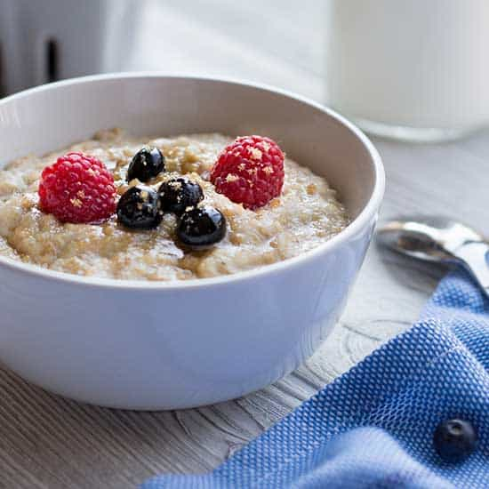

Instant Oatmeal

Description
Warm and comforting, Instant Oatmeal is an easy, wholesome breakfast.
Cooked in just a few minutes and topped with honey, fruits, or nuts, it’s
a healthy start to your day and keeps you full for hours.
Ingredients
- 1/2 cup oats
- 1 cup milk or water
- 1 tsp honey
- Optional: fruits or nuts
Steps
- Cook oats in milk/water for 2–3 minutes.
- Stir in honey and top with fruits or nuts.
- Serve warm.
Home